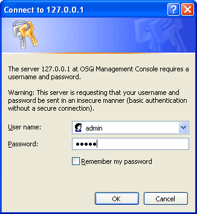
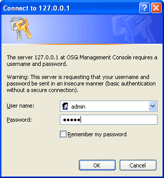
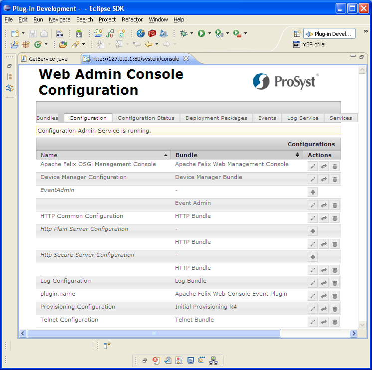

Note: If you have installed the Web Admin Console bundles after you have connected the runtime, re-connect to it.

Figure 1: Logging into the Web Admin Console.
The Web Admin Console is a Web-based application for monitoring and administration of OSGi Runtimes. It is developed on top of the Apache Felix Web Console. For thorough information about the Web Admin Console refer to the "Web Admin Console" document from the Administration section of the Framework Module documentation.
mToolkit allows you to use the capabilities of the Web Admin Console from inside Eclipse thus extending the options offered for managing OSGi platforms straight from the development environment.
To open the Web Admin Console in Eclipse:
Note: If you have installed the Web Admin Console bundles after you have connected the runtime, re-connect to it.

Figure 1: Logging into the Web Admin Console.
On success, a Web view will be opened in Eclipse showing the start page of the Web Admin Console to the OSGi runtime. By using the console you can manage bundle lifecycle, modify configuration dictionaries, view generated logs, etc.

Figure 2: Using the Web Admin Console from within Eclipse.

OSGi Management Overview
OSGi Frameworks Tree
Remote Console

Adding/Removing an OSGi Runtime
Configuring the Properties of an OSGi Runtime
Connecting to/Disconnecting from an OSGi Runtime
Managing Bundles
Managing Applications
Using the Remote Console
Customizing OSGi Runtime Management
OSGi Runtime Management Troubleshooting

Frameworks View
Frameworks View Tree Icons
Frameworks View Menus and Toolbar